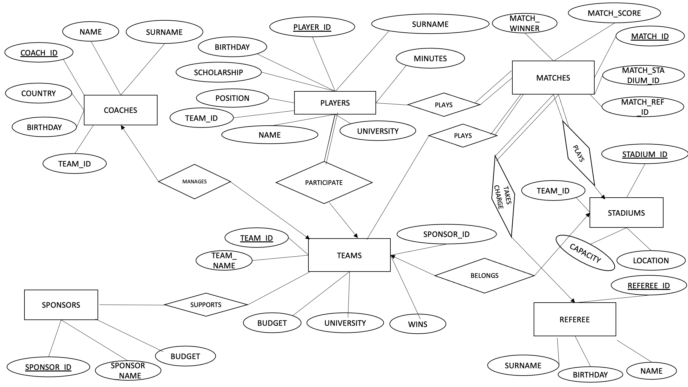

Turkish University's American Football League Database
- Problem Definition
- Design
- Implementation
Problem Definition
This project aims to create a database for use in the American football league playoffs in Turkish College League. The database will be designed to encompass not only information about university football teams such as stadium, sponsor, and coach details but also player information, statistics, match results, and important data related to match referees. The goal of this project is to establish a foundation for more effective team management, statistical analysis, and overall league performance evaluation in the American college football league. The ultimate objective is to present this information to the public.
- Entities
- Players
- Teams
- Coaches
- Matches
- Stadiums
- Referees
- Sponsors
- Relations, Properties & Attributes
- Primary key for the players’ table is PLAYER_ID. The player table has two relations, one of them is with Matches table and the relation is plays, and the other one is participation relation with teams table. A player can play in multiple matches, and a match can be played by multiple players (many-to-many). Every match must have a player (Total Participation). For Participate relations Each team has multiple players, and each player belongs to a team (one-to-many relation) (Total participation).
- The Matches table’s primary key is MATCH_ID. The Matches table has 4 relationships. Three of them are plays. A team can play in multiple matches, and a match can be played by multiple teams (many-to-many). Every match must have a team (Total Participation). And this is valid within the stadium table. The fourth relationship is the Takes_Charge relation. A referee can officiate multiple matches, and a match can be managed by one referee(one-to-many). Each match must have a referee, but a referee is not required to manage a specific match (Total Participation).
- third table is stadium table. The primary key for this table is STADIUM_ID. And it has belongs relation between teams table and one-to-one relationships because each team has one stadium and each stadium belongs to a team (Total Participation). For Referee table REFEREE_ID is the primary key.
- Our Teams table has 4 relationship and we already discovered belongs and plays relationships. The other two relationships are Manages and Supports relationships. A team can have multiple sponsors, and a sponsor can sponsor multiple teams. (many-to-many). For the Manages relationship every team must have a coach, and each coach can manage a team(one-to-one). Our sponsors table primary key is SPONSOR_ID. Our last but not least table is Coaches table. For this table primary key is COACH_ID.
DESIGN
ER Diagram

Tables
We have 88 rows of data in Players table but we only show 4 of them
for the sake of representation. In the other tables we show all of the
datas.
| PLAYERS |
|---|
| PLAYER_ID | NAME | SURNAME | BIRTHDAY | SCHOLARSHIP | POSITION | UNIVERSITY | MINUTES | TEAM_ID |
|---|
| 1002 | Arda | Özkan | 09.12.1998 | 0 | RB | Yeditepe University | 52 | 1 |
| 1023 | Ahmet | Gümüş | 12.09.2005 | 100 | QB | Mersin University | 36 | 2 |
| 1045 | Erkan | Arıkan | 11.20.2000 | 0 | QB | Ege University | 47 | 3 |
| 1068 | Ercan | Yavuz | 08.10.2001 | 50 | B | Özyeğin University | 0 | 4 |
| TEAMS |
|---|
| TEAM_ID | TEAM_NAME | UNIVERSITY | SPONSOR_ID | BUDGET | WINS | STADIUM_ID |
|---|
| 1 | Yeditepe Eagles | Yeditepe University | 70 | 121.000 | 4 | 40 |
| 4 | Özyeğin Wolves | Özyeğin University | 73 | 156.000 | 5 | 43 |
| 2 | Mersin Mustangs | Mersin University | 71 | 68000 | 3 | 42 |
| 3 | Ege Dolphins | Ege University | 72 | 156.000 | 3 | 41 |
| COACHES |
|---|
| COACH_ID | NAME | SURNAME | COUNTRY | BIRTHDAY | TEAM_ID |
|---|
| 30 | Onur | Durak | Turkey | 12.31.1989 | 1 |
| 31 | Uluç | Sergün | Turkey | 06.03.1986 | 2 |
| 32 | Gabe | Fendly | USA | 11.13.1965 | 3 |
| 33 | Casey | Crosby | USA | 11.13.1965 | 4 |
| MATCHES |
|---|
| MATCH_ID | MATCH_SCORE | MATCH_WINNER | STADIUM_ID | REF_ID |
|---|
| 20 | 27-26 | 1 | 42 | 50 |
| 21 | 33-15 | 2 | 41 | 51 |
| 22 | 20-13 | 2 | 43 | 52 |
| 23 | 24-16 | 4 | 40 | 53
|
| STADIUM |
|---|
| STADIUM_ID | CAPACITY | LOCATION | TEAM_ID |
|---|
| 40 | 2500 | İstanbul | 1 |
| 41 | 1000 | İzmir | 3 |
| 42 | 4000 | Mersin | 2 |
| 43 | 10000 | İstanbul | 4 |
| SPONSORS |
|---|
| SPONSOR_ID | SPONSOR_NAME | BUDGET |
|---|
| 70 | Başak Gıda | 23000 |
| 71 | Ciğerci Bahattin | 12000 |
| 72 | Performist | 16000 |
| 73 | Fiba banka | 35000 |
| REFEREES |
|---|
| REFEREE_ID | NAME | SURNAME | BIRTHDAY |
|---|
| 50 | BEGÜM | ATILAN | 12.10.1970 |
| 51 | KEREM | KOÇ | 06.19.1985 |
| 52 | NAMIK | ARSLAN | 02.26.1982 |
| 53 | UMUT | ÇANTACI | 01.04.1977 |
54 | SELİM | PAMUK | 10.22.1980 |
IMPLEMENTATION
Table Creations Codes
CREATE TABLE PLAYERS (
PLAYER_ID CHAR(4) NOT NULL,
PLAYER_NAME VARCHAR(30) NOT NULL,
PLAYER_SURNAME VARCHAR(30) NOT NULL,
BIRTHDAY DATETIME NOT NULL,
SCHOLARSHIP INTEGER,
POSITION CHAR(2) NOT NULL,
UNIVERSITY VARCHAR(50) NOT NULL,
MINUTES_ INTEGER,
TEAM_ID VARCHAR(2) NOT NULL,
PRIMARY KEY(PLAYER_ID)
)
CREATE TABLE COACHES (
COACH_ID CHAR(3) NOT NULL,
COACH_NAME VARCHAR(30) NOT NULL,
COACH_SURNAME VARCHAR(30) NOT NULL,
COUNTRY VARCHAR(30) NOT NULL,
BIRTHDAY DATETIME NOT NULL,
TEAM_ID VARCHAR(2) NOT NULL,
PRIMARY KEY(COACH_ID)
)
CREATE TABLE TEAMS (
TEAM_ID CHAR(2) NOT NULL,
TEAM_NAME VARCHAR(50) NOT NULL,
UNIVERSITY VARCHAR(50) NOT NULL,
SPONSOR_ID CHAR(2) NOT NULL,
BUDGET MONEY,
WINS CHAR(2) NOT NULL,
STADIUM_ID CHAR(2) NOT NULL,
PRIMARY KEY(TEAM_ID)
)
CREATE TABLE SPONSORS (
SPONSOR_ID CHAR(2) NOT NULL,
SPONSOR_NAME VARCHAR(50),
BUDGET MONEY,
PRIMARY KEY(SPONSOR_ID)
)
CREATE TABLE STADIUMS(
STADIUM_ID CHAR(2) NOT NULL,
CAPACITY INTEGER,
LOCATION_ VARCHAR(30),
TEAM_ID CHAR(2) NOT NULL,
PRIMARY KEY(STADIUM_ID)
)
CREATE TABLE MATCHES(
MATCH_ID CHAR(3) NOT NULL,
MATCH_SCORE VARCHAR(10) NOT NULL,
MATCH_WINNER_TEAM_ID CHAR(2) NOT NULL,
MATCH_STD_ID CHAR(2) NOT NULL,
REFEREE_ID CHAR(2) NOT NULL,
PRIMARY KEY(MATCH_ID)
)
CREATE TABLE REFEREES(
REFEREE_ID CHAR(2) NOT NULL,
REFEREE_NAME CHAR(30) NOT NULL,
REFEREE_SURNAME CHAR(30) NOT NULL,
BIRTHDAY DATETIME NOT NULL,
PRIMARY KEY(REFEREE_ID)
)
Data Entry Codes
INSERT INTO PLAYERS VALUES('1001','Umut','Piranlıoğlu','07.05.2000','50','QB','Yeditepe University','22','1');
INSERT INTO PLAYERS VALUES('1003','Kaan','Sarul','04.23.2003','100','RB','Yeditepe University','58','1');
INSERT INTO PLAYERS VALUES('1002','Arda','Özkan','09.12.1998','0','RB','Yeditepe University','52','1');
INSERT INTO PLAYERS VALUES('1004','İrfan','Kılınç','11.08.2001','100','WR','Yeditepe University','30','1');
INSERT INTO PLAYERS VALUES('1005','Umut Ekin','Doğan','01.30.1999','50','OL','Yeditepe University','35','1');
INSERT INTO PLAYERS VALUES('1006','Doğuhan','Aslan','06.17.2004','0','OL','Yeditepe University','3','1');
INSERT INTO PLAYERS VALUES('1007','Sami','Karabıyık','03.19.2002','0','OL','Yeditepe University','7','1');
INSERT INTO PLAYERS VALUES('1008','Oğuz','Şekli','08.28.1998','0','OL','Yeditepe University','56','1');
INSERT INTO PLAYERS VALUES('1009','Ege','Acar','12.14.2005','0','OL','Yeditepe University','40','1');
INSERT INTO PLAYERS VALUES('1010','Baran','Kara','10.02.2003','0','DL','Yeditepe University','37','1');
INSERT INTO PLAYERS VALUES('1011','Ziya','Gülal','05.20.2001','25','DL','Yeditepe University','6','1');
INSERT INTO PLAYERS VALUES('1012','Oğuzhan','Çubuk','02.07.2004','50','DL','Yeditepe University','28','1');
INSERT INTO PLAYERS VALUES('1013','Emre','Özbatır','09.11.2000','100','DL','Yeditepe University','10','1');
INSERT INTO PLAYERS VALUES('1014','Alper','Pamukçuoğlu','07.26.2002','100','LB','Yeditepe University','54','1');
INSERT INTO PLAYERS VALUES('1015','Yağız','Sayar','04.03.2005','50','LB','Yeditepe University','56','1');
INSERT INTO PLAYERS VALUES('1016','Berke','Demir','11.29.1998','50','LB','Yeditepe University','26','1');
INSERT INTO PLAYERS VALUES('1017','Uygar','Bolat','03.15.2003','0','CB','Yeditepe University','38','1');
INSERT INTO PLAYERS VALUES('1018','Diyar','İnce','06.22.2004','0','CB','Yeditepe University','4','1');
INSERT INTO PLAYERS VALUES('1019','Paşa','Atılan','01.06.1999','0','CB','Yeditepe University','30','1');
INSERT INTO PLAYERS VALUES('1020','Görkem','Şen','10.18.2001','0','CB','Yeditepe University','6','1');
INSERT INTO PLAYERS VALUES('1021','Alp','Taş','08.05.2002','25','WR','Yeditepe University','29','1');
INSERT INTO PLAYERS VALUES('1022','Egehan','Erdoğan','05.13.2000','25','SF','Yeditepe University','33','1');
INSERT INTO PLAYERS VALUES('1023','Ahmet','Gümüş','12.09.2005','100','QB','Mersin University','36','1');
INSERT INTO PLAYERS VALUES('1024','Mehmet','Aydın','02.24.2003','100','RB','Mersin University','15','2');
INSERT INTO PLAYERS VALUES('1025','Mustafa','Demir','07.01.2001','50','WR','Mersin University','6','2');
INSERT INTO PLAYERS VALUES('1026','Ali','Şahin','04.08.2004','50','QB','Mersin University','39','2');
INSERT INTO PLAYERS VALUES('1027','Emre','Aksoy','09.16.1998','25','OL','Mersin University','18','2');
INSERT INTO PLAYERS VALUES('1028','Cem','Gür','11.27.2002','25','OL','Mersin University','60','2');
INSERT INTO PLAYERS VALUES('1029','Kerem','Öztürk','06.14.2005','25','OL','Mersin University','41','2');
INSERT INTO PLAYERS VALUES('1030','Baış','Yüksel','03.21.2000','0','OL','Mersin University','58','2');
INSERT INTO PLAYERS VALUES('1031','Can','Çetin','10.04.2004','0','CB','Mersin University','27','2');
INSERT INTO PLAYERS VALUES('1032','Burak','Arslan','07.19.1999','0','DL','Mersin University','53','2');
INSERT INTO PLAYERS VALUES('1033','Kaan','Karahan','02.09.2003','100','DL','Mersin University','34','2');
INSERT INTO PLAYERS VALUES('1034','Serkan','Kaya','05.26.2001','100','DL','Mersin University','22','2');
INSERT INTO PLAYERS VALUES('1035','Onur','Tekin','12.02.2005','50','DL','Mersin University','46','2');
INSERT INTO PLAYERS VALUES('1036','Eren','Yıldırım','08.11.2000','50','LB','Mersin University','42','2');
INSERT INTO PLAYERS VALUES('1037','Koray','Korkmaz','04.18.2002','50','LB','Mersin University','11','2');
INSERT INTO PLAYERS VALUES('1038','Mert','Atalay','10.23.1998','50','LB','Mersin University','18','2');
INSERT INTO PLAYERS VALUES('1039','Selim','Doğan','03.01.2004','25','CB','Mersin University','8','2');
INSERT INTO PLAYERS VALUES('1040','Volkan','Gültekin','06.15.2003','25','CB','Mersin University','47','2');
INSERT INTO PLAYERS VALUES('1041','Taylan','Taşkın','01.05.2001','50','CB','Mersin University','54','2');
INSERT INTO PLAYERS VALUES('1042','Hakan','Koçak','09.12.2004','100','CB','Mersin University','25','2');
INSERT INTO PLAYERS VALUES('1043','Berkay','Özdemir','07.30.1999','100','WR','Mersin University','12','2');
INSERT INTO PLAYERS VALUES('1044','Deniz','Yıldız','04.07.2002','100','SF','Mersin University','42','2');
INSERT INTO PLAYERS VALUES('1045','Erkan','Arıkan','11.20.2000','0','QB','Ege University','47','3');
INSERT INTO PLAYERS VALUES('1046','Umut','Taşkın','06.27.2005','0','RB','Ege University','50','3');
INSERT INTO PLAYERS VALUES('1047','Furkan','Kocaman','03.14.1999','0','WR','Ege University','2','3');
INSERT INTO PLAYERS VALUES('1048','Oğuzhan','Ayhan','08.25.2003','25','WR','Ege University','57','3');
INSERT INTO PLAYERS VALUES('1049','Yusuf','Karakaş','05.02.2004','75','OL','Ege University','41','3');
INSERT INTO PLAYERS VALUES('1050','Levent','Gök','12.09.2001','75','OL','Ege University','50','3');
INSERT INTO PLAYERS VALUES('1051','Selçuk','Demirtaş','10.22.2002','75','OL','Ege University','38','3');
INSERT INTO PLAYERS VALUES('1052','Berk','Savaş','07.06.1998','50','OL','Ege University','49','3');
INSERT INTO PLAYERS VALUES('1053','Samet','Aksoy','01.18.2005','25','OL','Ege University','5','3');
INSERT INTO PLAYERS VALUES('1054','Engin','Akgün','04.03.2000','100','DL','Ege University','34','3');
INSERT INTO PLAYERS VALUES('1055','Uğur','Akın','11.10.2003','0','DL','Ege University','52','3');
INSERT INTO PLAYERS VALUES('1056','Mete','Şen','09.26.1998','0','DL','Ege University','33','3');
INSERT INTO PLAYERS VALUES('1057','Metin','Eren','05.08.2002','100','SF','Ege University','29','3');
INSERT INTO PLAYERS VALUES('1058','Oktay','Aksoy','12.16.2004','50','LB','Ege University','22','3');
INSERT INTO PLAYERS VALUES('1059','Arda','Çelik','08.29.1999','75','LB','Ege University','52','3');
INSERT INTO PLAYERS VALUES('1060','Ege','Güler','02.03.2001','25','LB','Ege University','22','3');
INSERT INTO PLAYERS VALUES('1061','Furkan','Gür','07.20.2003','50','LB','Ege University','4','3');
INSERT INTO PLAYERS VALUES('1062','Onurcan','Yavuz','10.06.1998','50','CB','Ege University','58','3');
INSERT INTO PLAYERS VALUES('1063','Alper','Kılıç','06.01.2004','50','CB','Ege University','32','3');
INSERT INTO PLAYERS VALUES('1064','Murat','Taşkın','03.14.2002','100','CB','Ege University','50','3');
INSERT INTO PLAYERS VALUES('1065','Gökhan','Duran','11.25.2000','0','WR','Ege University','58','3');
INSERT INTO PLAYERS VALUES('1066','Korhan','Erdoğan','09.07.2005','75','SF','Ege University','5','3');
INSERT INTO PLAYERS VALUES('1067','Erhan','Aslan','04.22.1999','100','QB','Özyeğin University ','2','4');
INSERT INTO PLAYERS VALUES('1068','Ercan','Yavuz','08.10.2001','50','B','Özyeğin University ','0','4');
INSERT INTO PLAYERS VALUES('1069','Cihan','Kılıç','05.04.2004','25','WR','Özyeğin University','32','4');
INSERT INTO PLAYERS VALUES('1070','Tuncay','Demirtaş','01.13.2003','0','WR','Özyeğin University','4','4');
INSERT INTO PLAYERS VALUES('1071','Tolga','Çelik','10.31.1998','0','OL','Özyeğin University','55','4');
INSERT INTO PLAYERS VALUES('1072','Hüseyin','Kocaman','07.17.2005','0','OL','Özyeğin University','30','4');
INSERT INTO PLAYERS VALUES('1073','Serhat','Taşkın','02.26.2000','50','OL','Özyeğin University','55','4');
INSERT INTO PLAYERS VALUES('1074','Caner','Çetin','06.09.2002','75','RB','Özyeğin University','55','4');
INSERT INTO PLAYERS VALUES('1075','Kaan','Akün','09.19.1999','100','OL','Özyeğin University','37','4');
INSERT INTO PLAYERS VALUES('1076','Emirhan','Yavuz','04.02.2003','100','DL','Özyeğin University','16','4');
INSERT INTO PLAYERS VALUES('1077','Halil','Gürsoy','11.11.2004','75','DL','Özyeğin University','46','4');
INSERT INTO PLAYERS VALUES('1078','Burahan','Şen','08.28.2001','25','DL','Özyeğin University','52','4');
INSERT INTO PLAYERS VALUES('1079','Ramazan','Taşkın','12.05.1998','0','OL','Özyeğin University','17','4');
INSERT INTO PLAYERS VALUES('1080','İbrahim','Güler','07.21.2000','100','LB','Özyeğin University','17','4');
INSERT INTO PLAYERS VALUES('1081','Fatih','Güneş','02.14.2005','25','LB','Özyeğin University','22','4');
INSERT INTO PLAYERS VALUES('1082','Yunus','Yalçın','05.08.1999','75','LB','Özyeğin University','8','4');
INSERT INTO PLAYERS VALUES('1083','Osman','Tuncer','03.23.2004','75','CB','Özyeğin University','50','4');
INSERT INTO PLAYERS VALUES('1084','Murat','Koçak','10.30.2001','0','WR','Özyeğin University','41','4');
INSERT INTO PLAYERS VALUES('1085','İsmail','Çakır','06.12.2003','0','CB','Özyeğin University','45','4');
INSERT INTO PLAYERS VALUES('1086','Abdullah','Çetin','01.25.2002','0','CB','Özyeğin University','13','4');
INSERT INTO PLAYERS VALUES('1087','Bilge','Yıldız','09.17.1998','25','WR','Özyeğin University','31','4');
INSERT INTO PLAYERS VALUES('1088','Selim','Güneş','07.04.2004','0','SF','Özyeğin University','16','4');
INSERT INTO TEAMS VALUES('1','Yeditepe Eagles','Yeditepe University','70','121000','4','40');
INSERT INTO TEAMS VALUES('4','Özyeğin Wolves','Özyeğin University','73','156000','5','43');
INSERT INTO TEAMS VALUES('2','Mersin Mustangs','Mersin University','71','68000','3','42');
INSERT INTO TEAMS VALUES('3','Ege Dolphins','Ege University','72’,’84000','3','41');
INSERT INTO COACHES VALUES('30','Onur','Durak','Turkey','12.31.1989','1');
INSERT INTO COACHES VALUES('31','Uluç','Sergün','Turkey','06.03.1986','2');
INSERT INTO COACHES VALUES('32','Gabe','Fendly','USA','08.24.1970','3');
INSERT INTO COACHES VALUES('33','Casey','Crosby','USA','11.13.1965','4');
INSERT INTO SPONSORS VALUES('70','Başak Gıda','23000');
INSERT INTO SPONSORS VALUES('71','Ciğerci Bahattin','12000');
INSERT INTO SPONSORS VALUES('72','Performist','16000');
INSERT INTO SPONSORS VALUES('73','Fiba banka','35000');
INSERT INTO STADIUMS VALUES('40','2500','İstanbul','1');
INSERT INTO STADIUMS VALUES('41','1000','İzmir','3');
INSERT INTO STADIUMS VALUES('42','4000','Mersin','2');
INSERT INTO STADIUMS VALUES('43','10000','İstanbul','4');
INSERT INTO MATCHES VALUES('20','27-26','1','42','50');
INSERT INTO MATCHES VALUES('21','33-15','2','41','51');
INSERT INTO MATCHES VALUES('22','20-13','2','43','52');
INSERT INTO MATCHES VALUES('23','24-16','4','40','53');
INSERT INTO REFEREES VALUES('50','BEGÜM','ATILAN','12.10.1970');
INSERT INTO REFEREES VALUES('51','KEREM','KOÇ','06.19.1985');
INSERT INTO REFEREES VALUES('52','NAMIK','ARSLAN','02.26.1982');
INSERT INTO REFEREES VALUES('53','UMUT','ÇANTACI','01.04.1977');
INSERT INTO REFEREES VALUES('54','SELİM','PAMUK','10.22.1980');
Query Questions & Answers
A query that applies a row and column selection to a
single table
Q1) List names, surnames, and the contries of the coaches who is not from Turkey.
A) SELECT COACH_NAME, COACH_SURNAME, COUNTRY FROM COACHES
WHERE COUNTRY!='Turkey';
| COACH_NAME | COACH_NAME | COACHES |
|---|
| Gabe | Fendly | USA |
| Casey | Crosby | USA |
A query that takes join of two tables and does row and
column selection and ordering.
Q2) List the Names, Budget and stadium's location of the teams who has a budget more than 80000.
The list should be ordered with respect to team budgets in descending order.
A) SELECT T.TEAM_NAME, S.LOCATION_, T.BUDGET FROM TEAMS T, STADIUMS S
WHERE T.STADIUM_ID=S.STADIUM_ID AND BUDGET>80000
ORDER BY T.BUDGET DESC;
| TEAM_NAME |
LOCATION |
BUDGET |
| Özyegin Wolves |
Istanbul |
156000 |
| Yeditepe Eagles |
Istanbul |
121000 |
| Ege Dolphins |
Izmir |
84000 |
Repeat the previous task but this time your query
should take join of three tables
Q3) List the Names, Budget, stadium's location and sponsors of the teams who has a budget more than 80000
and its sponsor budget should be more than 15000.
The list should be ordered with respect to team budgets in descending order.
A) SELECT T.TEAM_NAME, S.LOCATION_, T.BUDGET, P.SPONSOR_NAME FROM TEAMS T, STADIUMS S, SPONSORS P
WHERE T.STADIUM_ID=S.STADIUM_ID AND T.SPONSOR_ID=P.SPONSOR_ID AND T.BUDGET>80000 AND P.BUDGET>15000
ORDER BY T.BUDGET DESC;
| TEAM_NAME |
LOCATION |
BUDGET |
SPONSOR_NAME |
| Özyegin Wolves |
Istanbul |
156000 |
Fiba banka |
| Yeditepe Eagles |
Istanbul |
121000 |
Basak Gıda |
| Ege Dolphins |
Izmir |
84000 |
Performist |
Write a query involving outer join and row selection.
Q4) Retrieve the names and universities of all teams along with the sponsor names (if available)
from the "TEAMS" and "SPONSORS" tables. Include all teams, even those without sponsors.
For the sponsors who has a budget over than 10000
A) SELECT T.TEAM_NAME, T.UNIVERSITY, S.SPONSOR_NAME
FROM TEAMS T
LEFT OUTER JOIN SPONSORS S ON T.SPONSOR_ID = S.SPONSOR_ID
WHERE S.BUDGET > 10000
| TEAM_NAME |
UNIVERSITY |
SPONSOR_NAME |
| Yeditepe Eagles |
Yeditepe University |
Basak Gida |
| Mersin Mustangs |
Mersin University |
Cigerci Bahattin |
| Ege Dolphins |
Ege University |
Performist |
| Özyegin Wolves |
Özyegin University |
Fiba banka |
Write two queries involving summary functions and
row selection and join operations.
Q5) list the total played time for all players in yeditepe university
A) SELECT SUM(P.MINUTES_) AS TotalMin
FROM PLAYERS P, TEAMS T
WHERE P.TEAM_ID=T.TEAM_ID AND T.TEAM_NAME LIKE 'Yeditepe%'
Q6) list the total number of players plays in OL position
A) SELECT COUNT(P.POSITION) AS #ofPosition
FROM PLAYERS P, TEAMS T
WHERE P.TEAM_ID=T.TEAM_ID AND P.POSITION='OL'
Write two queries involving join, grouping, row
selection and ordering
Q7)List the average scholarship amount for players and their teams who
born after '01-01-2000'. Order alphabetically.
A) SELECT AVG(P.SCHOLARSHIP) AS AVG_SCHOLARSHIP, T.TEAM_NAME
FROM PLAYERS P, TEAMS T
WHERE P.TEAM_ID=T.TEAM_ID AND P.BIRTHDAY > '01-01-2000'
GROUP BY T.TEAM_NAME
ORDER BY T.TEAM_NAME
| AVG_SCHOLARSHIP |
TEAM_NAME |
| 48 |
Ege Dolphins |
| 52 |
Mersin Mustangs |
| 37 |
Özyegin Wolves |
| 40 |
Yeditepe Eagles |
Q8) List the team name, team budget, total # of players along with their coaches name except Ege Dolphins.
List in ascending order according to team budget
A) SELECT COUNT(P.PLAYER_ID) AS Total#Players, T.TEAM_NAME, C.COACH_NAME, T.BUDGET
FROM PLAYERS P, TEAMS T, COACHES C
WHERE P.TEAM_ID=T.TEAM_ID AND P.TEAM_ID=C.TEAM_ID AND TEAM_NAME!='Ege Dolphins'
GROUP BY C.COACH_NAME, T.TEAM_NAME, T.BUDGET
ORDER BY T.BUDGET
| Total#Players |
TEAM_NAME |
COACH_NAME |
BUDGET |
| 21 |
Mersin Mustangs |
Uluç |
68000 |
| 23 |
Yeditepe Eagles |
Onur |
121000 |
| 22 |
Özyegin Wolves |
Casey |
156000 |
Write two queries involving join, grouping and group
selection
Q9) List the team name, total # of players along with their coaches If the team's
total number of players is bigger 22
A) SELECT COUNT(P.PLAYER_ID) AS Total#Player, T.TEAM_NAME, C.COACH_NAME
FROM PLAYERS P, TEAMS T, COACHES C
WHERE P.TEAM_ID=T.TEAM_ID AND P.TEAM_ID=C.TEAM_ID
GROUP BY C.COACH_NAME, T.TEAM_NAME
HAVING COUNT(P.PLAYER_ID) > 22
| Total#Players |
TEAM NAME |
COACH_NAME |
| 23 |
Yeditepe Eagles |
Onur |
Q10) List team name, total minute played by players in the team whos players played
more than or equals to 11 hours
A) SELECT T.TEAM_NAME, SUM(P.MINUTES_) AS SumMinutes
FROM TEAMS T, PLAYERS P
WHERE T.TEAM_ID=P.TEAM_ID
GROUP BY T.TEAM_NAME
HAVING SUM(P.MINUTES_)/60>=11
| TEAM NAME |
SumMinutes |
| Ege Dolphins |
790 |
| Mersin Mustangs |
678 |
| Yeditepe Eagles |
696 |
Write a query involving join, grouping, group selection
and row selection
Q11) List the team name and sum of played times for each player if sum of the played
time for the players is more than 300
minutes and has more or equal to 50 percent scholarship
A) SELECT T.TEAM_NAME, SUM(P.MINUTES_) AS SumMinutes FROM TEAMS T, PLAYERS P
WHERE P.TEAM_ID=T.TEAM_ID AND P.SCHOLARSHIP>=50
GROUP BY T.TEAM_NAME
HAVING SUM(P.MINUTES_)>300;
| TEAM NAME |
SumMinutes |
| Ege Dolphins |
464 |
| Mersin Mustangs |
366 |
| Yeditepe Eagles |
355 |
| Team Members |
| Name Surname | Student Number |
| Burak Yavuz | 20200703013 |
| Murat Can Bayrak | 20180703109 |
| Umut Piranlıoğlu | 20190703028 |
| Arda Özkan | 20190703131 |
Go Top